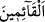
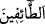

Mükerreme’dir.
Harem’e yüz sür (yönel), çünkü o güzel harîmde
Siyahlara bürünmüş bir güzel (Beytullah) ikamet etmektedir
Harem-i şerîfin avlusu, huld-i berrîn olan cennettir
O böyle bir avluda bağdaş kurup oturmuştur
Onun yüzü, Arap güzellerinin kıblesidir
Acem mahbublarının secde ettiği yer de onun tarafıdır
Kâbe, benim yeni açmış misk kokulu gülümdür
Gönül ve din bahçem onunla tazedir
“Ve (ona şöyle demiştik): Bana hiçbir şeyi eş tutma;” âyetin bu kısmı “…hazırlamış”
ifâdesini tefsir etmektedir Çünkü “hazırladık (bevve’nâ)” ifâdesi ‘kul edindik’ mânâsını
da içine almaktadır. Çünkü “hazırlamak (et-tebvie)” ile ancak ibadet için hazırlamak
kasdedilir. Sanki şöyle buyrulmuştur: “İbrahim’i kendimize kul olarak seçmiş ve ona:
“Bana hiç bir şeyi ortak koşma.” demiştik.” O zaman bana şirk getirme, bir şeyi bana eş
ve benzer de tutma. Çünkü ben şirkten münezzeh ve mukaddesim.
Onu “tavaf edenler, ayakta ibâdet edenler, rükû ve secdeye varanlar” yâni namaz
kılanlar “için evimi” putlardan ve etrafına pislik atılmasından “temiz tut.” Allah Teâlâ
evi kendisine izâfe etti. Çünkü o Allah’ın âyetlerinin nurları ile aydınlanmaktadır.
Namazın rükünleri olan kıyâm, rükû ve secde ile ifâde edilmesi, onlardan her birinin
müstakil olarak Allah’ın evini temiz tutmayı gerektirdiğine delâlet etmesi içindir. Hepsi
birleşince durum nasıl olur, bir düşün!
İbn Abbâs (r.anhümâ)’dan rivâyet edildiğine göre “ ile Beyt’te mukîm olanlar
kastedilmiştir. Bu durumda “den maksad orada ikamet etmeyip âfakî (taşralı)
olarak orayı tavaf edenler olur. Kâşifî der ki: “Bu, ilim ehlinin dili iledir. İşâret diliyle
ise Hak Teâlâ şöyle buyurur: Ben kibriyânın dârü’l-mülkü olan gönlünü her şeyden
temizle ve mâsivânın ona girmesine izin verme. Zira o bizim muhabbet şarabımızın
kadehidir. “Kalbler yeryüzünde Allah’ın kaplarıdır. Kapların Allah’a en sevgili olanı
en saf ve temiz olanıdır.”
Dâvud (a.s.)’a şöyle vahiy geldi:
“Benim için gönül evini temiz tut, çünkü benim azamet nazarım kalbe iner.” Bunun
üzerine Dâvud (a.s.): “Hangi ev seni alır/sen hangi eve sığarsın ki? Senin azamet ve
celâline lâyık olan ev hangisidir?” diye sordu. Şöyle buyruldu: “Mü’min kulun
gönlüdür.” Dâvud (a.s.): “Orayı ne şekilde temiz tutarım?” diye sordu. “Oraya aşk
ateşini at da bizden gayrı ne varsa hepsini yaksın.” cevabı geldi.
Gönülde parlayan ateş ne güzeldir